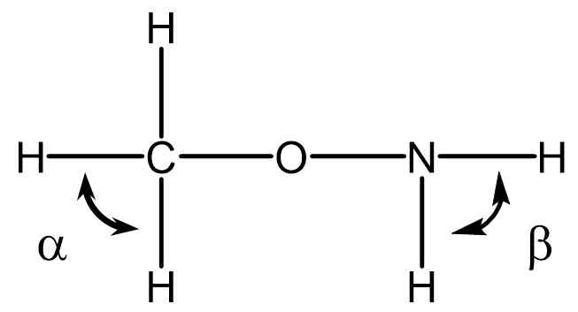
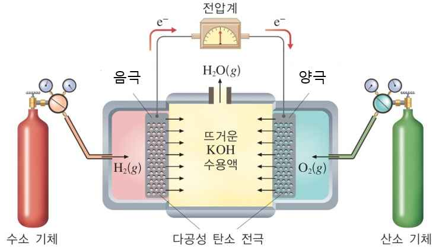

문제 4
4-1 단계 1
그림은 메톡시아민 (\(\text{CH}_3\text{ONH}_2\))의 구조식을 나타낸 것이다.

1) 위 분자에 존재하는 비공유 전자쌍을 모두 표시하시오.
2) 결합각 \(\alpha\)와 \(\beta\)중 어느 것이 더 클까? 간단히 설명하시오
4-2 단계 2
루이스의 산-염기 정의는 무엇인가? 루이스의 산-염기 정의를 이용해 암모니아가 염기임을 설명하시오.
4-3 단계 3
다음은 수소-산소 연료 전지의 구조와 이와 관련된 반쪽 반응 및 \(25°\text{C}\)에서의 표준 환원 전위를 나타낸 것이다.

\[2\text{H}_2\text{O}(l) + 2e^- \rightarrow \text{H}_2(g) + 2\text{OH}^-(aq) \qquad E° = -0.83 \text{ V}\]
\[\text{O}_2(g) + 2\text{H}_2\text{O}(l) + 4e^- \rightarrow 4\text{OH}^-(aq) \qquad E° = +0.40 \text{ V}\]
(1) 전체 전지 반응식을 쓰시오.
(2) 이때 산화되는 물질과 환원되는 물질은 각각 무엇인가?
(3) \(25°\text{C}\)에서 전지의 표준 전지 전위를 구하시오.